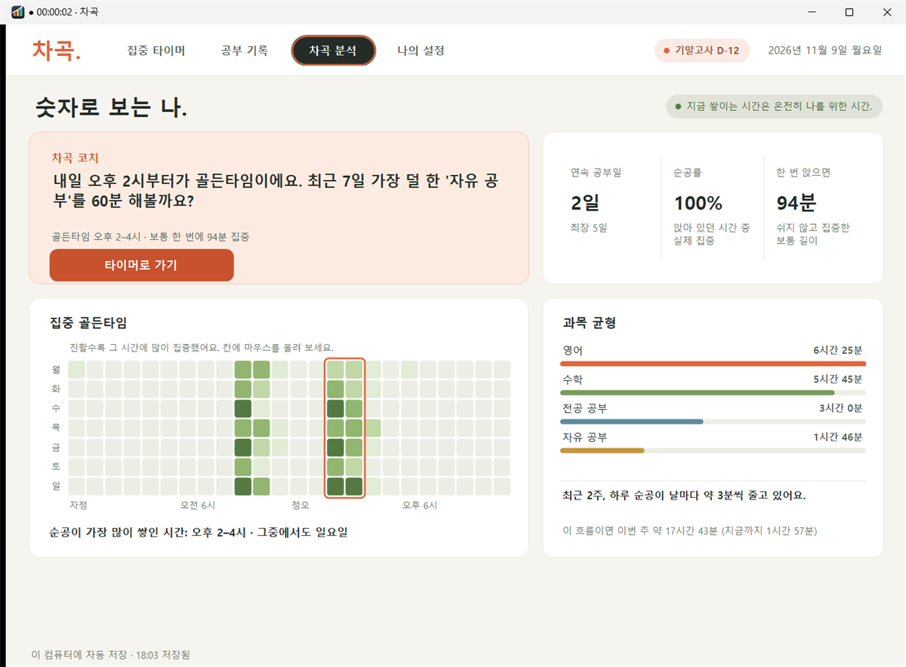

차곡 분석
언제 집중이 잘 되는지,
기록이 알려 줘요
최근 28일 기록을 요일과 시간으로 펼쳐서 순공이 가장 많이 쌓인 두 시간을 찾아요. 계산은 전부 내 컴퓨터 안에서 해요.
- 집중 골든타임 · 요일×시간 지도
- 순공률 · 앉아 있던 시간 중 실제로 집중한 비율
- 흐름 · 최근 2주 하루 순공이 늘고 있는지
- 과목 균형 · 이번 주 어떤 과목에 시간을 썼는지
차곡 코치
오늘은 오후 2시부터가 골든타임이에요. 최근 7일 가장 덜 한 '영어'를 40분 해볼까요?
